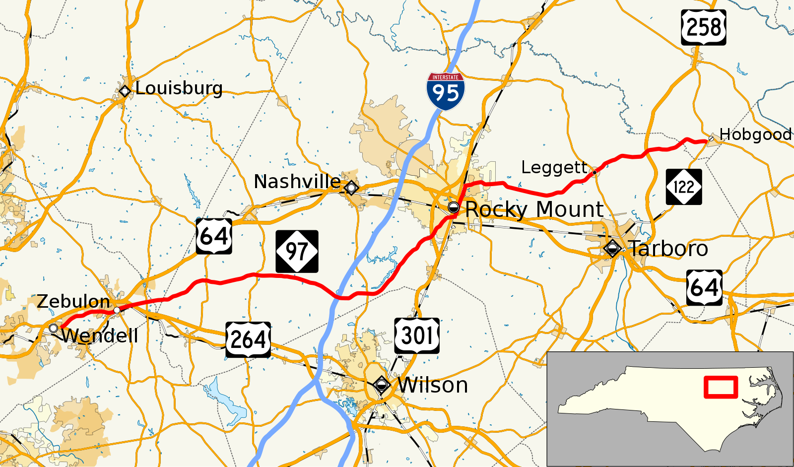

Hello, my name is Jordan Dixon, but most people call me Danni! I was born June 26, 1996 and I am 27 years old! I am a North Carolina native originally from a small town by the name of Rocky Mount but I’ve lived in Garner, Raleigh, and have been residing in Clayton since the beginning of the pandemic. Additionally, I am the eldest of 2 siblings. I have a sister who is 6 years younger than myself and a brother who is 12 years younger than myself. I am currently pursuing a Cybersecurity degree at Wake Technical Community College.
